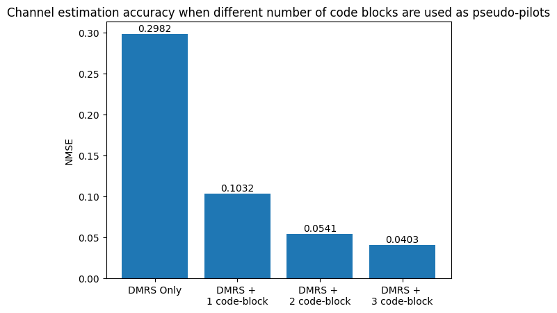

Evaluating Channel Estimation Performance Using NMSE
This notebook evaluates the trained channel estimation model on the test dataset using Normalized Mean Squared Error (NMSE). NMSE measures the difference between the predicted channel estimates and the corresponding ground-truth channels, providing a direct assessment of estimation accuracy.
The evaluation uses the trained ChEstNet model together with the test dataset generated during the dataset creation stage. The resulting NMSE values can be compared with those obtained from conventional channel estimation methods to quantify the accuracy improvements provided by the neural network.
Unlike the BLER and HARQ evaluations presented in the subsequent notebooks, this analysis focuses solely on channel estimation quality and does not include end-to-end communication performance metrics.
[1]:
import numpy as np
import os
import matplotlib.pyplot as plt
import torch
from ChEstNet import ChEstNet, ChEstDataset
from ChEstUtils import toComplex
[2]:
# Load the trained model
modelPath = 'Models/Pretrained.pth' # Use the pre-trained model
# modelPath = 'Models/Trained.pth' # Use the model trained in the previous step (see MLChEstTrain.ipynb)
device = "cuda:0" if torch.cuda.is_available() else "mps" if torch.backends.mps.is_available() else "cpu"
model = ChEstNet(device) # Instantiate the model on the target device
model.loadParams(modelPath); # Load the trained model parameters
[3]:
# Evaluate the model on the test dataset
dataPath = "/data/datasets/SelfRefine/" # Replace with the path to your dataset files
testDS = ChEstDataset( os.path.join(dataPath,"Test.npy") ) # Load the test dataset
numCBs = len(testDS.numPilots)
sumMAEs = np.zeros(numCBs, dtype=np.float64)
sumMSEs = np.zeros(numCBs, dtype=np.float64)
sumNMSEs = np.zeros(numCBs, dtype=np.float64)
counts = np.zeros(numCBs, dtype=np.int32)
model.eval() # Set the model to evaluation mode
with torch.no_grad():
for batchSamples, batchLabels in testDS.batches(device):
samples = toComplex(batchSamples.cpu().numpy())[:,:-1,:,:]
actuals = toComplex(batchLabels.cpu().numpy())
preds = toComplex( model( batchSamples ).cpu().numpy() )
for sample, actual, pred in zip(samples, actuals, preds):
pilotIdx = np.where(sample.real!=0)
assert len(pilotIdx[0]) in testDS.numPilots, "%d - %d\n"%(len(pilotIdx[0]), sum(counts))
numGoodCBs = testDS.numPilots.index(len(pilotIdx[0]))
absoluteErrors = np.abs(pred-actual)
sumMAEs[numGoodCBs] += absoluteErrors.mean()
sumMSEs[numGoodCBs] += np.square(absoluteErrors).mean()
sumNMSEs[numGoodCBs]+= np.square(absoluteErrors).sum()/np.square(np.abs(actual-actual.mean())).sum()
counts[numGoodCBs] += 1
mses, maes, nmses= sumMSEs/counts, sumMAEs/counts, sumNMSEs/counts
print(f"numGood: 0 1 2 3" )
print(f"MSE: {mses[0]:.6f} {mses[1]:.6f} {mses[2]:.6f} {mses[3]:.6f}" )
print(f"MAE: {maes[0]:.6f} {maes[1]:.6f} {maes[2]:.6f} {maes[3]:.6f}" )
print(f"NMSE: {nmses[0]:.6f} {nmses[1]:.6f} {nmses[2]:.6f} {nmses[3]:.6f}\n" )
rects = plt.bar(['DMRS Only', 'DMRS + \n1 code-block', 'DMRS + \n2 code-block', 'DMRS + \n3 code-block'], nmses)
plt.bar_label(rects, padding=1, fmt='%6.4f', fontsize=10)
plt.title("Channel estimation accuracy when different number of code blocks are used as pseudo-pilots");
plt.ylabel("NMSE")
plt.show()
numGood: 0 1 2 3
MSE: 0.405214 0.135565 0.071499 0.052737
MAE: 0.547839 0.306795 0.231227 0.199122
NMSE: 0.298225 0.103242 0.054076 0.040313

[ ]:
[ ]: